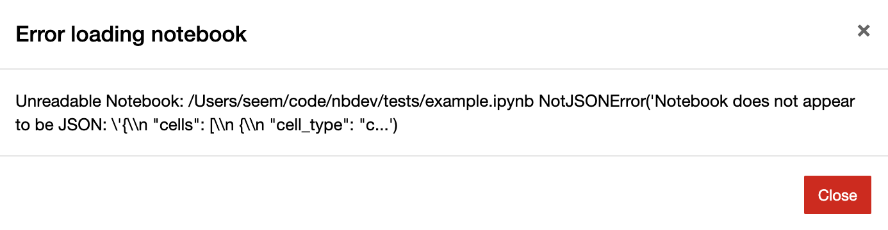
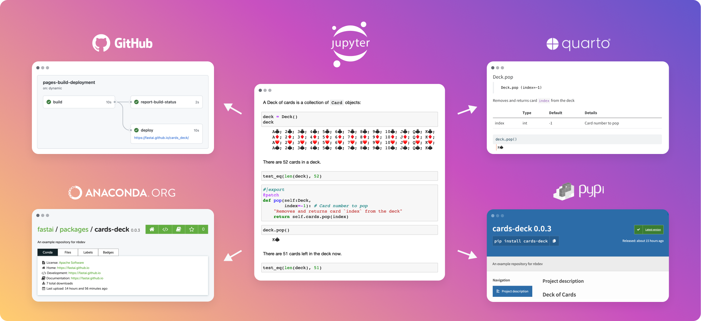

nbdev
Get Started
Tutorial
Blog
Help
Report an Issue
Fast.ai Forum
FAQ
nbdev Blog
Getting Started
Tutorials
End-To-End Walkthrough
Notebook Best Practices
Qmd Documents
RenderScripts
Git-Friendly Jupyter
Blogging
Pre-Commit Hooks
Documentation Only Sites
Writing nbdev plugins
nbdev1 Migration
Modular nbdev
Explanations
Settings.ini
Directives
Docs Website
Why nbdev
API
config
maker
process
export
doclinks
sync
merge
showdoc
frontmatter
processors
clean
test
cli
quarto
qmd
migrate
serve
release
Categories
All
(3)
Other Formats
CommonMark
nbdev Blog
News, tips, and commentary about all things nbdev
Create A 🤗 Space From A Notebook
A demo of using nbdev with Hugging Face Spaces & Gradio.
Nov 7, 2022
Hamel Husain

The Jupyter+git problem is now solved
Previously, using git with Jupyter could create conflicts and break notebooks. With nbdev2, the problem has been totally solved.
Aug 25, 2022
Jeremy Howard

nbdev+Quarto: A new secret weapon for productivity
Our favorite tool for software engineering productivity–nbdev, now re-written with Quarto
Jul 28, 2022
Hamel Husain, Jeremy Howard
No matching items